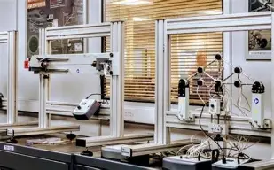

Laboratory equipment importation
Importation of educational laboratory equipment and scientific materials from international suppliers.
03 — WHAT WE DO
Business activities centered on helping educational organizations access scientific and laboratory equipment.
Importation of educational laboratory equipment and scientific materials from international suppliers.
Supply and distribution of equipment for universities, colleges, schools, and educational institutions.
Equipment categories supporting civil, mechanical, and electrical engineering laboratories.
Equipment and materials for physics, chemistry, biological sciences, and natural science learning.
Helping institutions consider equipment categories aligned with their teaching and laboratory requirements.
EQUIPMENT IN CONTEXT
Examples of the technical and laboratory environments represented in the supplied photographs.


